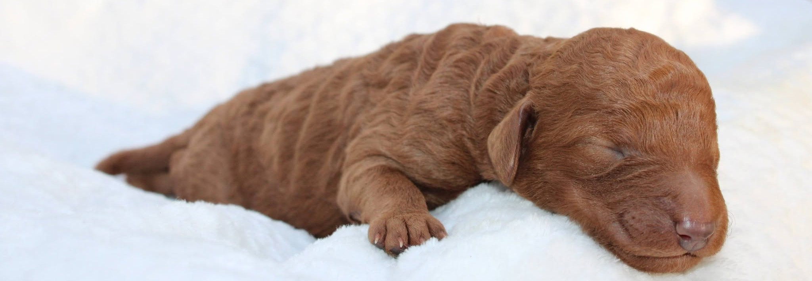
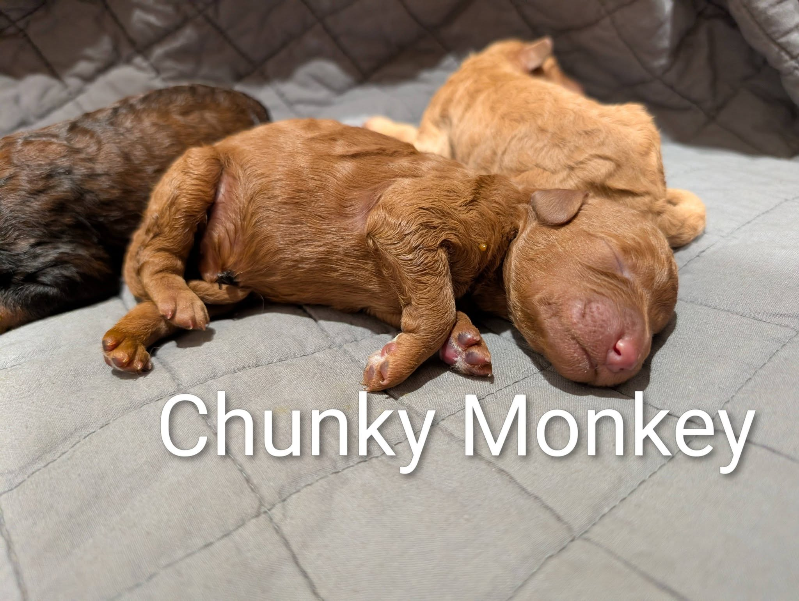
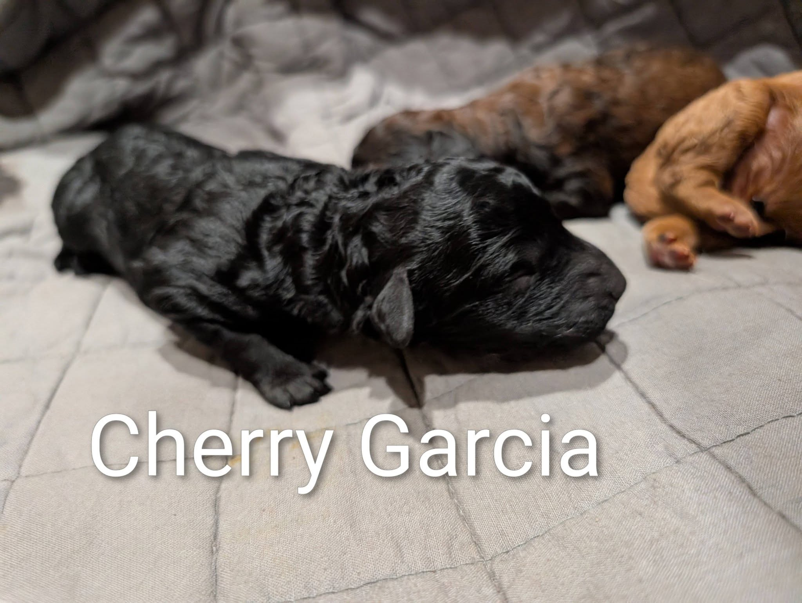
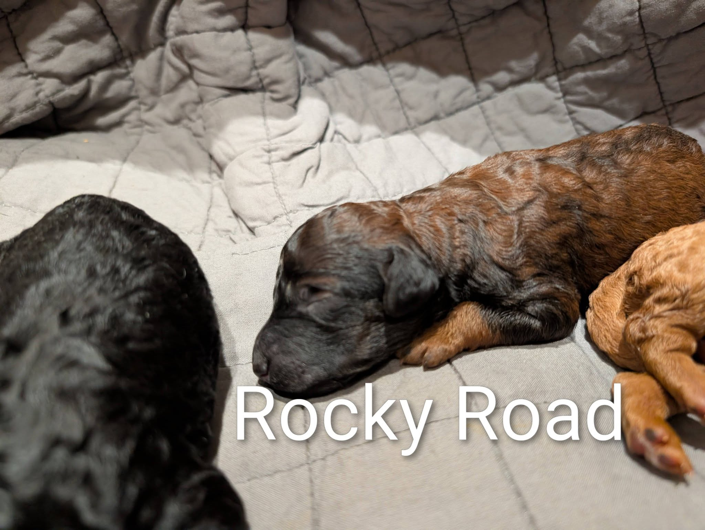
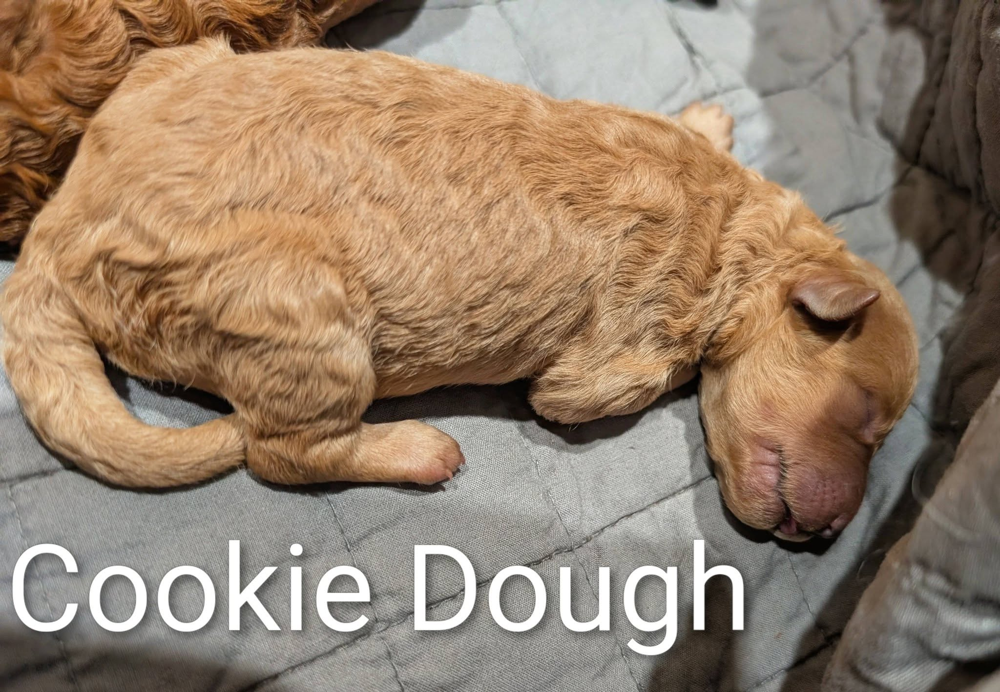

Chunkey Monkey is our heaviest little puppy at birth, hence his name! He seems to always be happy to nurse and is always quiet. His coat is so shiny and intense red. He melts in your arms to snuggle and weighs 15.6 OZ

Cherry Garcia is our vibrant black female puppy. She is the runt of the litter and has shown she has more energy than any of her litter mates. She is our “opera singer” because she makes so many cute little noises as she nurses. She is more difficult to photograph because they don’t do her justice of how beautiful she is.

Rockey Road was the first one born in his litter and is so laid back. He’s frequently found on his back sleeping and relaxing. He’s never made a peep and is so soft and majestic colored. We need time to be sure, but I believe he is a wild sable or a black dog expressing sable. We need a few more weeks of growing coat to see. Rockey road has surpassed his litter mate and is now the heaviest pup that weighs 16.8 OZ

Cookie Dough is our biggest female. She has a cream coat and is the lightest in color amongst her litter mates. She is spunkey and always finds her nipple first.